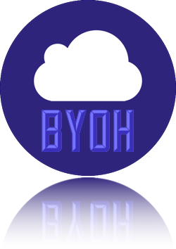

A Getting Started Guide for Complete Noobs... like me
Everything is online, from retail stores and shops to streaming video and social networks. This guide is intended to help readers understand how a website or web app can be put online and made available for others to access.
The target audience for this guide is intentially broad. It gives you enough overview for those that are just curious about the process, as well as granular details into how to do it yourself.
Sure, there are many different ways of getting your website put onto the internets - some even easier than this. But traditional web hosts can be problematic and a standard web hosting solution isn't usually a valid representation of how companies are getting their sites & apps online.
Many web hosts still require you to manually upload all your code & changes to their servers, but what happens if you accidentally upload the wrong file or delete something you didn't mean to? With BYOH, readers are shown ways to prevent that from happening or even undoing something that was done accidentally.
This guide will show you how to set up a server in the cloud (via DigitalOcean) to host your website or app so that others can access it on the internet.
A domain name is what you type into your browser's address bar to go to a website, such as www.google.com, whitehouse.gov, or theroadhome.org. Behind the scenes, the domain actually takes you to an IP Address where your server is located. It makes it easier for others to access your website. Can you imagine if we had to know every IP address for all of the websites we've visited? Yikes.
Getting your very own domain name is easy and fairly inexpensive. All that's required is buying your domain name, then pointing it to your server (which will be covered below).
Or "how to undo that terrible change you just made that broke everything"
Git is a way to keep a history of changes that have been made to your code. It allows for multiple developers to work on the same code simultaneously without one person overwriting work that another had already done. It makes it easier to resolve any conflicts in the code before uploading it to the server to be put online.
Git (or some other version control software) is critical when working on code with more than just one person. However, even if you are the only one writing code, it is still important to use in case you need to undo a change you made or figure out at what point in history that a piece of code was written.
Imagine you are working on changing the homepage to your website. You create a new index.html file, fill it with some junk content, and maybe even throw in a couple irrelevant pictures as placeholders. Then you decide to scrap it, but you don't have the previous version of the file. So you connect to your server to download the current version and overwrite your "work in progress". You click the download button, click "overwrite", and get the file. Or so you thought... When you open up the "downloaded" file, you realize it's the same file you were working on before! You suddenly realize that you accidentally clicked the Upload button instead of Download. Now, the whole world can see your junky work in progress! And you don't have the original file anywhere to go back! Time to call tech support... Hope you have a couple hours to spare!
Now, what if you had used Git? If you wanted to make the same mistake, you would have to 1.) add the file, 2.) commit your change, and 3.) push it to the server. Hopefully you would have caught your mistake before you pushed it out. But what if you didn't? With Git, you have an easy way to undo that change you made, no tech support required! You can revert your change and push it out and everything will be back to where it was before, when it was working!
Or what if you had multiple people working on the same file at the same time? One person is making numerous, in-depth changes, where the other just had to fix a typo. The bigger change goes out first, but then the other typo fix overwrites it (using the old version). The developer making the big changes sees that a new version was uploaded, so they download it and replace their current version... Hopefully they had a backup!
Or "hold onto your butts"
SSH is a way to securely connect to your web server and make changes. But be careful! Don't run any command if you aren't 100% sure what it does. You could delete something you don't mean to or install something that could break or be unsafe for your server.
You use SSH through your computer's terminal/command line application. However, to connect to your server via SSH, you must set up SSH Keys if you haven't already (see below).
If you already have SSH keys created and want to use them, you can skip this step. However, if you don't have any or are unsure, continue on.
How to Set Up SSH Keys on DigitalOcean
First, create an account on DigitalOcean, add your billing information, then sign in.
pbcopy < ~/.ssh/id_rsa.pub. This will copy your public SSH key to your clipboard.On the Droplets page, click Create Droplet

How much you pay a month determines the hardware specifications of your server. The more you pay, the more resources your server will have to deliver your website to more users. You can start small, then add additional resources in the future if the need arises.
Each server is located in a specific region on the globe. Selecting the region that is closest to your customers can help improve their load time. If you require other options (see below) though, your options might be slightly limited as not all regions have the same features.
What are Backups? What are Snapshots?
For this guide, we will be using the Ubuntu 14.04 x64 Distribution for the image. However, DigitalOcean has many different options for server distributions, one-click application installs, and more.
Click the SSH key that we added earlier, that's it!
For reference: Adding the Key to Your DigitalOcean Droplet
This is where the magic happens.
Click "Create Droplet".
How to point your domain to DigitalOcean